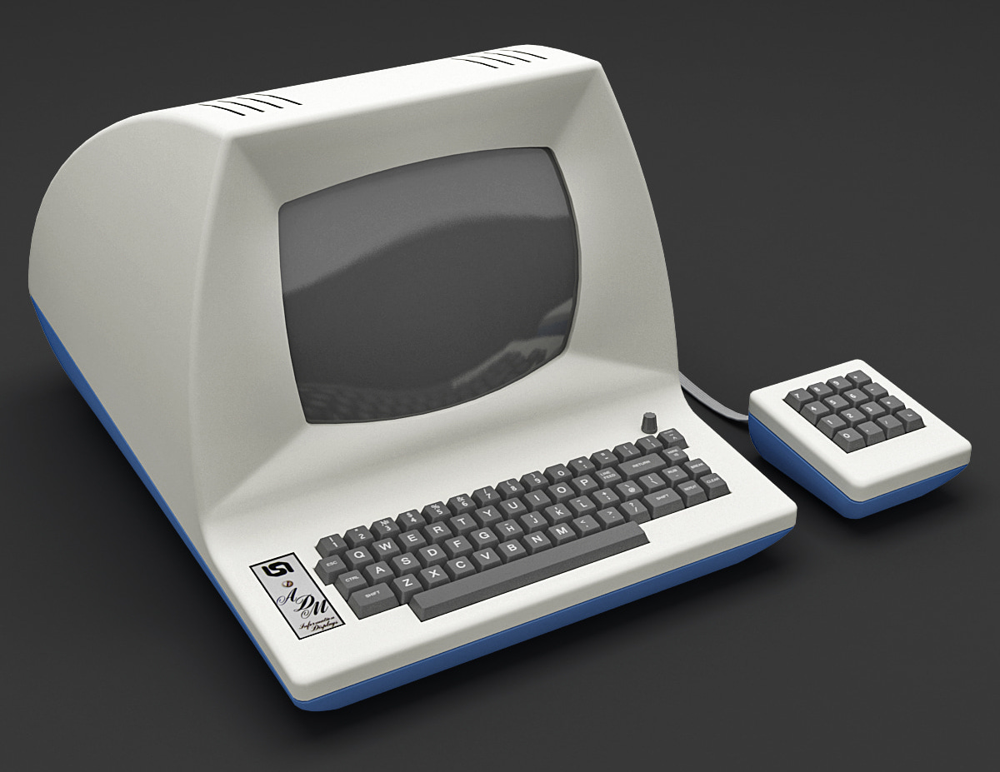

name: inverse layout: true class: center, middle, inverse --- layout: false # Ergonomie Vimiste Vim, Neovim, Doom-Emacs, Kakoune, Helix… 1. [édition modale](#3) 2. [les déplacements](#16) 3. [manipulation de <i>text-objects](#30)</i> 4. <i lang="en">[one spacebar to rule them all](#35)</i> 5. [navigation dans un projet](#40) 6. <i lang="en">[Vimify all the things ?](#50)</i> .footnote[:kazé / [@fabi1cazenave](https://github.com/fabi1cazenave)] --- ## Pourquoi Vim ? - disponible partout - utilisable dans un term - **ergonomie redoutable** - “bash as IDE” - nerd factor ([Vim pour les canetons](https://fabi1cazenave.github.io/slides/2017-vim-ducklings/), JdLL 2017) --- template: inverse # Édition modale  --- ## L’héritage d’`ed` - 1970 : `ed` (Ken Thompson) - 1976 : `ex` (Billy Joy), « extended » `ed` - 1977 : `vi` (Billy Joy), « visual mode » de `ex` - 1988 : `vim` (Bram Moolenaar), « Vi iMproved » - 2015 : Neovim ❤️ --- continued: true Les mécréants : - 2018 : Kakoune <small>(utilisé depuis ~2012)</small> - 2021 : Helix --- continued: true Les tricheurs : - Emacs : Viper, Vimpulse, Evil, Doom-Emacs… - Visual Studio : VSCodeVim, vscode-neovim… --- ## Édition modale ? On utilise essentiellement ces quatre modes : - <kbd>Esc</kbd> **normal** : afficher et manipuler du texte - <kbd>v</kbd> **visuel** : visualiser une sélection de texte - <kbd>i</kbd> **insertion** : ajouter (et supprimer) du texte - <kbd>:</kbd> **commande** : options et commandes complexes <small>(`ex` reste un mode de Vim, déclenché par <kbd>Q</kbd>)</small> En mode *insertion*, Vim se comporte comme un Notepad… mais sans aucun raccourci clavier. Objectif : travailler en mode *normal*. --- ## Mode *visuel* Trois variantes de mode *visuel* pour sélectionner du texte : - <kbd>v</kbd> = caractère par caractère - <kbd>Shift</kbd>-<kbd>v</kbd> = ligne par ligne - <kbd>Ctrl</kbd>-<kbd>v</kbd> = sélection rectangulaire … et <kbd>Esc</kbd> (ou même opérateur) pour revenir au mode *normal*. Nota : Kakoune et Helix ont toujours une sélection active. --- ## Mode *visuel* : actions de base `sélection opérateur` Une fois la sélection effectuée, les opérateurs déclenchent une action : - <kbd>d</kbd> : delete (couper) - <kbd>y</kbd> : yank (copier) - <kbd>p</kbd> : paste (coller) - <kbd>c</kbd> : change (couper + passer en mode *insertion*) --- ## Mode *normal* Les indispensables : - <kbd>u</kbd> : undo (annuler) <!-- - <kbd>Ctrl</kbd>-<kbd>r</kbd> : redo (refaire) --> - <kbd>.</kbd> : répéter la dernière action --- continued: true On peut aussi utiliser les actions sans passer par le mode visuel <small>(sauf Kakoune / Helix)</small> : `opérateur portée` - <kbd>d</kbd><kbd>w</kbd> : <i>“delete word”</i>, effacer le mot - <kbd>c</kbd><kbd>w</kbd> : <i>“change word”</i>, remplacer le mot - <kbd>y</kbd><kbd>y</kbd> : copier la ligne courante - <kbd>c</kbd><kbd>c</kbd> : remplacer la ligne courante --- ## Mode *commande* Les indispensables : - `:w` = “write” - `:saveas [nom_de_fichier]` - `:wq` = “write and quit” - `:cq` = “cancel and quit” (+ <kbd>Enter</kbd> pour valider et revenir au mode *normal*) **Démo !** --- ## Édition modale ❤️ - une nécessité dans les années ’70 - un choix d’ergonomie de nos jours --- continued: true Les mains restent en position dactylo : - ➡ pas de combos type <kbd>Ctrl</kbd><kbd>★</kbd> - ➡ pas de déviations ulnaires - ➡ pas de TMS « Emacs pinky » <div style="clear: both;"></div> --- continued: true Pertinent pour éditer du code : - on passe plus de temps à lire qu’à saisir du texte - commandes sémantiques (<kbd>d</kbd>elete, <kbd>p</kbd>aste, <kbd>c</kbd>hange…) --- template: inverse # Les déplacements  --- ## HJKL : l’héritage Standard ASCII (1963) : - <kbd>Ctrl</kbd>-<kbd>h</kbd> = Backspace - <kbd>Ctrl</kbd>-<kbd>j</kbd> = Line Feed  Terminal [ADM-3A](https://en.wikipedia.org/wiki/ADM-3A#Legacy) (1976) : - <kbd>Ctrl</kbd>-<kbd>k</kbd> = Up - <kbd>Ctrl</kbd>-<kbd>l</kbd> = Right - <kbd>Ctrl</kbd>-<kbd>^</kbd> = Home - <kbd>Ctrl</kbd>-<kbd>z</kbd> = Clear Screen --- ## HJKL ❤️ = commandes **positionnelles** de déplacement : - quasi en homerow (position dactylo) - bien plus efficaces que les flèches ou la souris en mode *normal* Ça fonctionne avec d’autres applications : - <kbd>j</kbd><kbd>k</kbd> : gmail, feed.ly, twitter, emacs, screen, less/more/most… - <kbd>h</kbd><kbd>j</kbd><kbd>k</kbd><kbd>l</kbd> : Awesome, i3 (*ahem*), Ranger, NetHack… <small>Nota, les GUIs ont aussi des commandes positionnelles :<br> <kbd>Ctrl</kbd>-<kbd>z</kbd><kbd>x</kbd><kbd>c</kbd><kbd>v</kbd> (≠ sémantiques)</small> --- ## JK, vraiment ? TL;PL : oui, avec modération (= sans répétitions) - <kbd>/</kbd>, <kbd>?</kbd> : rechercher vers le haut / vers le bas (+ <kbd>n</kbd>, <kbd>N</kbd>) - <kbd>*</kbd>, <kbd>#</kbd> : idem, avec le mot sous le curseur (PRO-TIP !) - <kbd>{</kbd>, <kbd>}</kbd> : sauter à la ligne vide précédente / suivante - <kbd>g</kbd><kbd>g</kbd>, <kbd>G</kbd> : sauter en début / fin de fichier `~/.vimrc` ```vim " recherche incrémentale set hlsearch set incsearch ``` --- ## HL, vraiment ? Mouahahahahaha, nope. - <kbd>w</kbd>, <kbd>b</kbd> : mot suivant / précédent - <kbd>W</kbd>, <kbd>B</kbd> : MOT suivant / précédent <small>(= délimité par des espaces)</small> - <kbd>e</kbd>, <kbd>g</kbd><kbd>e</kbd> : fin de mot suivant / précédent - <kbd>E</kbd>, <kbd>g</kbd><kbd>E</kbd> : fin de MOT suivant / précédent <small>(= délimité par des espaces)</small> - <kbd>^</kbd>, <kbd>$</kbd> : début / fin de ligne --- continued: true **Tip :** corriger mot par mot plutôt que caractère par caractère fait progresser en dactylo, réduisant ainsi les erreurs. --- ## Mieux que WBE ? Pour éviter les répétitions de <kbd>w</kbd>, <kbd>b</kbd>, <kbd>e</kbd>… - <kbd>f</kbd>×, <kbd>F</kbd>× : chercher la lettre [×] suivante / précédente - <kbd>t</kbd>×, <kbd>T</kbd>× : atteindre la lettre [×] suivante / précédente - <kbd>;</kbd>, <kbd>,</kbd> : occurrence suivante / précédente --- continued: true Greffons utiles : - Vim : [EasyMotion](https://github.com/easymotion/vim-easymotion) - Neovim / Kakoune : [Hop.nvim](https://github.com/smoka7/hop.nvim) / [Hop.kak](https://github.com/hadronized/hop.kak) - <small>sneak, Seek, smalls, improvedft, clever-f, vim-extended-ft, Fanf,ingTastic;, IdeaVim-Sneak, leap.nvim, flash.nvim…</small> TL;PL : <kbd>s</kbd> remplace <kbd>f</kbd> et <kbd>t</kbd> de façon bidirectionnelle et non limitée à la ligne courante (Vimium-like). --- ## Hopopop, ch’uis perdu. Les indispensables, verticalement : - <kbd>j</kbd>, <kbd>k</kbd> : ligne à ligne - <kbd>/</kbd>, <kbd>?</kbd> : recherche Les indispensables, horizontalement : - <kbd>w</kbd>, <kbd>b</kbd> : mot à mot - <kbd>^</kbd>, <kbd>$</kbd> : début / fin de ligne Tous les autres : `:help navigation` --- ## Remapper HJKL ? <small>(Bépo…)</small> --- continued: true  --- ## Ne PAS remapper HJKL Pourquoi ? - remapper <kbd>c</kbd><kbd>t</kbd><kbd>s</kbd><kbd>r</kbd> (Bépo) déplace des commandes sémantiques et complique l’apprentissage - les déplacements Vim ne se limitent pas à <kbd>h</kbd><kbd>j</kbd><kbd>k</kbd><kbd>l</kbd> - seuls <kbd>j</kbd><kbd>k</kbd> sont réellement utiles en *homerow* --- continued: true Comment ? - un *layer* pour <kbd>←</kbd><kbd>↓</kbd><kbd>↑</kbd><kbd>→</kbd> (e.g. [Arsenik](https://github.com/OneDeadKey/arsenik) ou QMK) <br><small>➡ disponible pour toutes les applications</small> - mapper `+`/`-` en <kbd>AltGr</kbd>-<kbd>j</kbd>/<kbd>k</kbd> (e.g. [Ergo‑L](https://ergol.org) ou [Kalamine](https://github.com/OneDeadKey/kalamine)) <br><small>➡ appliquable aussi aux autres commandes de déplacement</small> - demain : Kalamine & Arsenik [à 13h](https://pretalx.jdll.org/jdll2024/talk/EWE3LW/), Ergo‑L [à 14h](https://pretalx.jdll.org/jdll2024/talk/QT7JBD/) ! --- ## Objectivité totale (allégorie)  --- template: inverse # Les text-objects  --- ## text-objects : définition `modifieur objet` Modifieur : - <kbd>i</kbd>, <kbd>a</kbd> : “in” ou “around” Objet : - <kbd>w</kbd>, <kbd>W</kbd> : mot - <kbd>s</kbd>, <kbd>p</kbd> : phrase, paragraphe (point / ligne vide) - <kbd>b</kbd>, <kbd>B</kbd> : bloc (parenthèses / accolades) - <kbd>t</kbd> : tag (html/xml) - <kbd>[</kbd><kbd>]</kbd>, <kbd>{</kbd><kbd>}</kbd>, <kbd>(</kbd><kbd>)</kbd>, <kbd>'</kbd>, <kbd>"</kbd>… --- ## text-objects : utilisation `opérateur modifieur objet` - <kbd>v</kbd><kbd>a</kbd><kbd>w</kbd> : sélectionne le mot - <kbd>d</kbd><kbd>a</kbd><kbd>w</kbd> : supprime le mot - <kbd>d</kbd><kbd>i</kbd><kbd>p</kbd> : supprime le paragraphe <br> (*sans* la ligne de séparation) - <kbd>d</kbd><kbd>a</kbd><kbd>p</kbd> : supprime le paragraphe <br> (*avec* la ligne de séparation) - <kbd>c</kbd><kbd>i</kbd><kbd>'</kbd> : change le contenu d’une chaîne Bonus : <kbd>.</kbd> pour répéter l’action, encore et derechef. **Démo !** --- ## Greffons Pour ajouter de nouveaux text-objects dans Vim : - [vim-textobj-user](https://github.com/kana/vim-textobj-user) - [targets.vim](https://github.com/wellle/targets.vim) - [vim-indent-object](https://github.com/michaeljsmith/vim-indent-object) Dans Neovim : - [nvim-treesitter-textobjects](https://github.com/nvim-treesitter/nvim-treesitter-textobjects) --- ## Poésie minimaliste > On n’appuie pas sur des raccourcis clavier. > > On discute avec Vim. > > On lui adresse des demandes précises sur quoi effectuer avec quel morceau. > > Tout ceci de manière annulable, répétable, factorisable, partageable ! [@delapouite](https://twitter.com/Delapouite) – auteur de [« Vim en 10 vimutes »](http://delapouite.com/slides/vim-en-10-vimutes/#/vimutes) <br><small>(+ Jim Dennis, [“Your problem with Vim is that you don’t grok vi”](https://stackoverflow.com/a/1220118/3001761)) </small> Objectif = « touch-typer » l’édition de code. --- template: inverse # let mapleader=" "  --- `<leader>` - = touche de préfixe pour nos raccourcis personnels - affectée à <kbd>\</kbd> par défaut - alternative moderne : <kbd>Espace</kbd> <br> (Helix, Doom-Emacs, distributions [Neo]Vim…) <!-- `~/.vimrc` --> ```vim let mapleader=" " nnoremap <Space> <Nop> ``` --- continued: true Utilisation : ```vim nmap <Leader>w :w<CR> ``` --- ## Which key ? `<Leader>` étant une « touche morte », il peut être utile d’afficher les actions disponibles… - Vim : [liuchengxu/vim-which-key](https://github.com/liuchengxu/vim-which-key) - Neovim : [folke/which-key.nvim](https://github.com/folke/which-key.nvim) - Emacs : [justbur/emacs-which-key](https://github.com/justbur/emacs-which-key) - Kakoune, Helix : inclus --- continued: true ➡ on peut alors *cascader* les touches mortes 😎 <br>(N touches sont toujours préférables à un seul combo) **Démo !** --- template: inverse # Navigation Comment passer d’un fichier à un autre ?  --- ## Panneau latéral - ergonomie classique Visual Studio & co - [NERDTree](https://github.com/preservim/nerdtree) (Vim), [Neo-Tree](https://github.com/nvim-neo-tree/neo-tree.nvim) (Neovim)  --- ## Panneau latéral  --- ## PAS de panneau latéral ! Ce type d’ergonomie se prête mal à Vim : - nécessite beaucoup de déplacements avant d’atteindre l’item <small>(sauf à utiliser la souris, mais plutôt mourir)</small> - difficilement compatible avec la notion de fenêtres Vim --- continued: true Alternative : - activer la sélection de fichier à la demande <br><small>– soit dans la fenêtre courante</small> <br><small>– soit dans une nouvelle fenêtre</small> <br><small>– soit dans une fenêtre flottante</small> - faciliter le passage d’un buffer à l’autre <br>plutôt que multiplier les fenêtres --- ## [Ranger](https://github.com/ranger/ranger) Un explorateur de fichiers en TUI (Python) - affichage en [colonnes de Miller](https://fr.wikipedia.org/wiki/Colonnes_de_Miller) : parent, courant, prévisu - navigation avec HJKL ❤️ Alternatives asynchrones : - minimaliste : [lf](https://github.com/gokcehan/lf) (Go) - étendue : [Yazi](https://github.com/sxyazi/yazi) (Rust) 🦆 Intégration dans (Neo)Vim via l’API `:term` - alternative facile : [fabi1cazenave/TermOpen.vim](https://github.com/fabi1cazenave/termopen.vim) **Démo !** --- ## Fuzzy-matching = filtrer une liste de chaînes par quelques caractères - implémentation la plus connue : [fzf](https://github.com/junegunn/fzf) <small>(Go)</small> - alternatives : [fzy](https://github.com/jhawthorn/fzy) <small>(C)</small>, [skim](https://github.com/lotabout/skim) <small>(Rust)</small>, [peco](https://github.com/peco/peco) <small>(Go)</small>, [pick](https://github.com/mptre/pick) <small>(C)</small>, [selecta](https://github.com/garybernhardt/selecta) <small>(Ruby)</small>, [icepick](https://github.com/felipesere/icepick) <small>(Rust)</small>, [hf](https://github.com/hugows/hf) <small>(Go)</small>… - utilisation dans le terminal… ou depuis Vim Greffons pour filtrer des fichiers, buffers, textes… : - Vim : [fzf.vim](https://github.com/junegunn/fzf.vim) - Neovim : [telescope.nvim](https://github.com/nvim-telescope/telescope.nvim) - Helix : inclus --- ## Fuzzy-matching : telescope.nvim Neovim + [kickstart.nvim](https://github.com/nvim-lua/kickstart.nvim) : - <kbd>Espace</kbd><kbd>s</kbd><kbd>f</kbd> : [s]earch [f]iles - <kbd>Espace</kbd><kbd>g</kbd><kbd>f</kbd> : search [g]it [f]iles - <kbd>Espace</kbd><kbd>?</kbd> : fichiers récents - <kbd>Espace</kbd><kbd>/</kbd> : recherche dans le buffer courant - <kbd>Espace</kbd><kbd>Espace</kbd> : buffers ouverts Le greffon indispensable pour Neovim ! ❤️ **Démo !** --- ## Language Server Protocol (LSP) Neovim + [kickstart.nvim](https://github.com/nvim-lua/kickstart.nvim) : <small>(Telescope + Mason + lsp-config…)</small> - <kbd>g</kbd><kbd>d</kbd> : [g]oto [d]efinition - <kbd>g</kbd><kbd>D</kbd> : [g]oto [D]eclaration - <kbd>g</kbd><kbd>r</kbd> : [g]oto [r]eferences - <kbd>g</kbd><kbd>i</kbd> : [g]oto [i]mplementation - <kbd>[</kbd><kbd>d</kbd> / <kbd>]</kbd><kbd>d</kbd> : prev / next [d]iagnostic - <kbd>Espace</kbd><kbd>s</kbd><kbd>d</kbd> : [s]earch [d]iagnostics - <kbd>Espace</kbd><kbd>d</kbd><kbd>s</kbd> : [d]ocument [s]ymbols La grosse « nouveauté » avec DAP et TreeSitter. <br>Indispensable pour les dévs. --- ## Parcimonie Utiliser des buffers plutôt que des fenêtres / onglets : - <kbd>Ctrl</kbd>-<kbd>o</kbd> = remonter la pile de sauts - <kbd>Ctrl</kbd>-<kbd>i</kbd> = descendre la pile de sauts - `:ls` = liste des buffers ➡ plus idiomatique, plus efficace Neovim + [kickstart.nvim](https://github.com/nvim-lua/kickstart.nvim) : - <kbd>Espace</kbd><kbd>Espace</kbd> = liste des buffers ❤️ --- template: inverse # Vimify…  --- ## Terminal Fuzzy-matcher : `fzf` ou équivalent (`fzy`, `skim`…) - <kbd>Ctrl</kbd>-<kbd>r</kbd> : reverse history search `autojump` ou équivalent (`zoxide`…) : - `j [morceau_de_chemin]` Explorateur de fichiers : - `ranger`, `yazi` Édition modale de la ligne de commande : - soit en activant le mode Vi de bash / zsh - soit en utilisant la commande `fc` --- ## Gestionnaire de fenêtres Gestionnaire de fenêtres en mosaïque : - valeurs sûres : `i3` (XOrg) / `sway` (Wayland) - alternatives : `dwm`, `wmii`, `awesome`, `bspwm`, `hyprland`… Lanceur d’applications : - rustique : `dmenu` - élégant : `rofi` - … ou celui de votre DE actuel ! --- ## Navigateur web Firefox, what else ? 🦊 Vimium : - interface modale, HJKL - navigation façon EasyMotion (<kbd>f</kbd>) - « Vomnibar » : <kbd>o</kbd>pen URL, select <kbd>T</kbd>ab… ➡ les raisons d’utiliser la souris deviennent si rares qu’une émulation QMK suffit amplement ! --- template: inverse # Conclusion Vim, c’est bien. <br>Neovim, c’est très bien. <br>La souris, c’est mal. --- ## Conclusion - L’ergonomie Vim résulte d’une évolution « naturelle » <br><small>Kakoune et Helix proposent des alternatives modernes</small> --- continued: true - <kbd>j</kbd><kbd>k</kbd> oui, <kbd>h</kbd><kbd>l</kbd> bof, <kbd>←</kbd><kbd>↓</kbd><kbd>↑</kbd><kbd>→</kbd> non <br>– <small>déplacements avec <kbd>w</kbd><kbd>b</kbd><kbd>e</kbd>, <kbd>f</kbd><kbd>t</kbd> et <kbd>{</kbd><kbd>}</kbd>, <kbd>/</kbd><kbd>?</kbd>, <kbd>*</kbd><kbd>#</kbd>… </small> <br>– <small>édition de <i>text-objects</i> et non de caractères</small> --- continued: true - fonctions avancées <br>– <small><kbd>Espace</kbd> en touche `Leader`</small> <br>– <small>navigation via fuzzy-matching, LSP, <kbd>Ctrl</kbd>-<kbd>o</kbd></small> --- continued: true - Ranger / LF / Yazi, dmenu / rofi, i3 / Sway, Vimium… --- continued: true ** Atelier tupperVim à 16h ! ** <br> https://tuppervim.org .footnote[:kazé / [@fabi1cazenave](https://github.com/fabi1cazenave)]